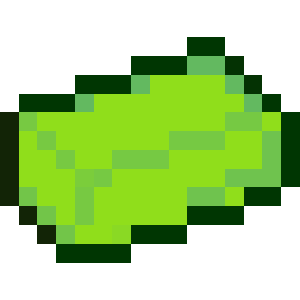

Home
Wikipedia
Stroon

Appearance
It is very glowy and seems radioactive but it isn't. Stroon's color is lime. It's used to craft
Raw Heavy Iron
.
How to get.
You can get it from
Stroon Ore
and it drops around 3 of them.